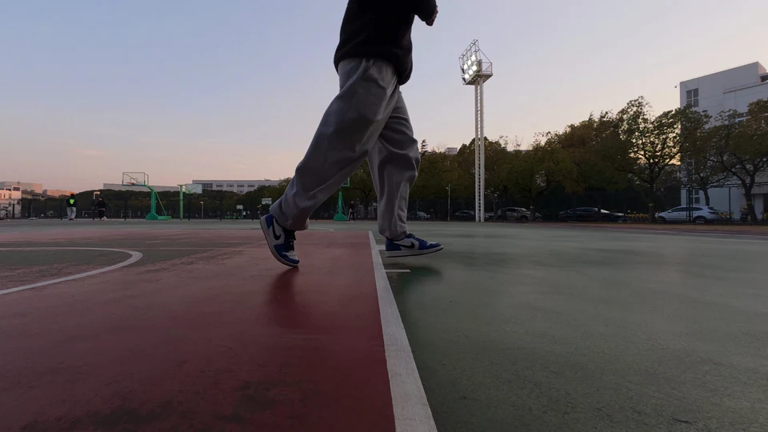

RealDynLFV: A Large-Parallax Benchmark for
Real-World Dynamic Light Field Video
{{affiliation}} {{corresponding}}
{{speed_note}}
{{video_caption}}
{{motion_title}}
{{motion_description}}
- {{stats_html}}
{{motion_note}}
{{time_title}}
{{time_intro}}
{{temporal_html}}
{{time_note}}
{{more_motion}}
{{motion_clips_html}}
{{explore_title}}
{{explore_intro}}
{{scene_selector_html}}
{{selected_scene_description}}


{{choose_view}}
{{view_instruction}}
{{view_buttons_html}}
{{view_note}}
{{sample_details_title}}
{{sample_details}}
{{sample_timing}}
{{dataset_title}}
{{dataset_description}}
{{dataset_challenges}}
32{{train}}5{{validation}}8{{test}}
{{split_caption}}
{{diversity_html}}
{{diversity_caption}}

{{benchmark_title}}
{{benchmark_intro}}
{{framework_source}}{{citation_title}}
{{citation}}